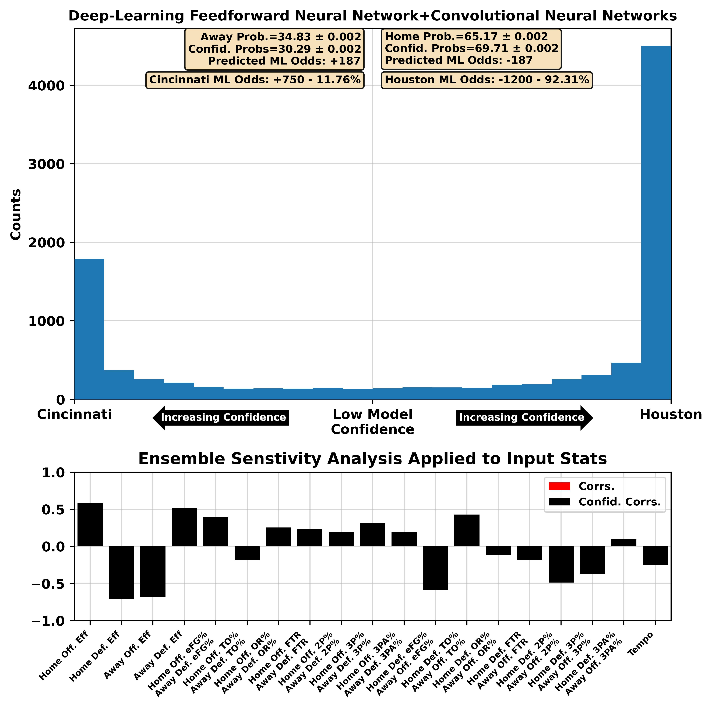
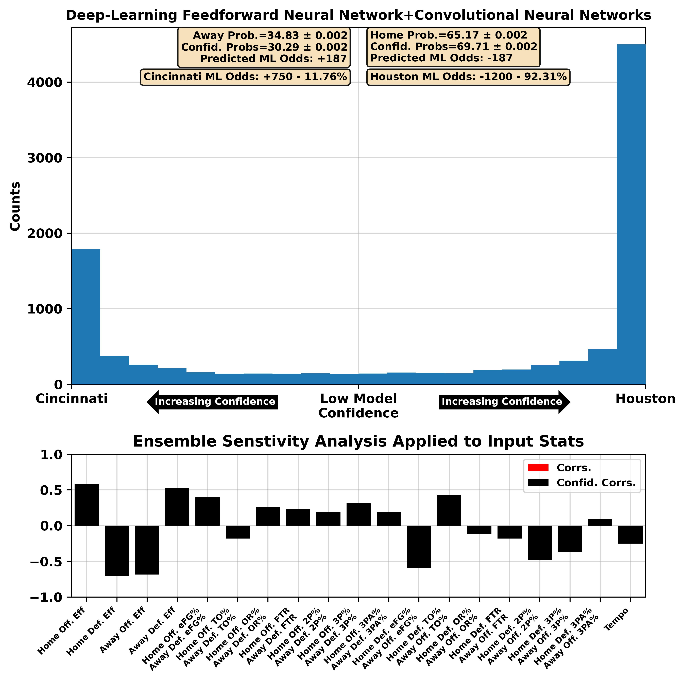
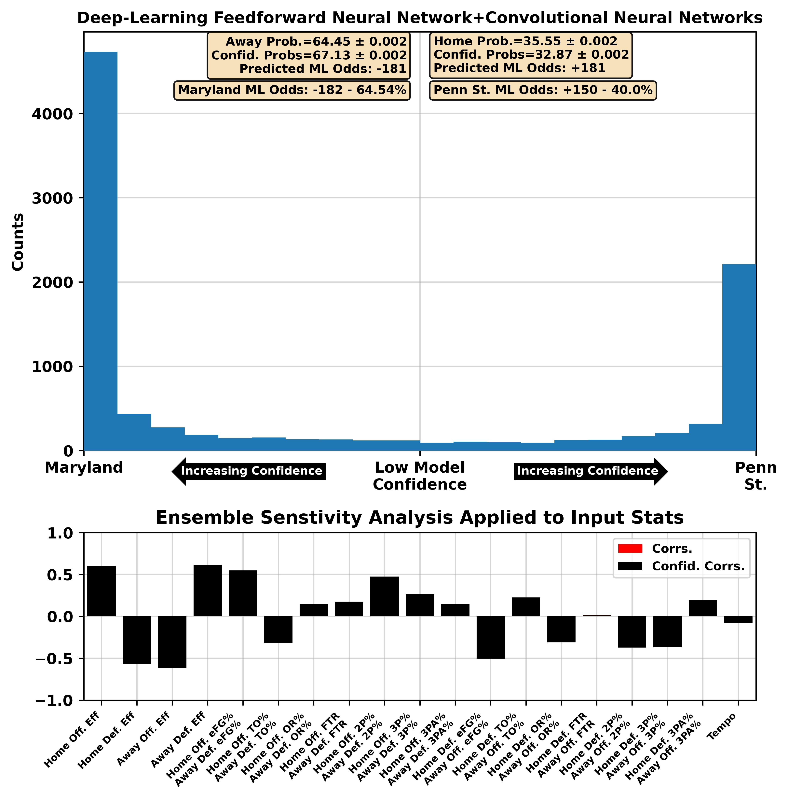
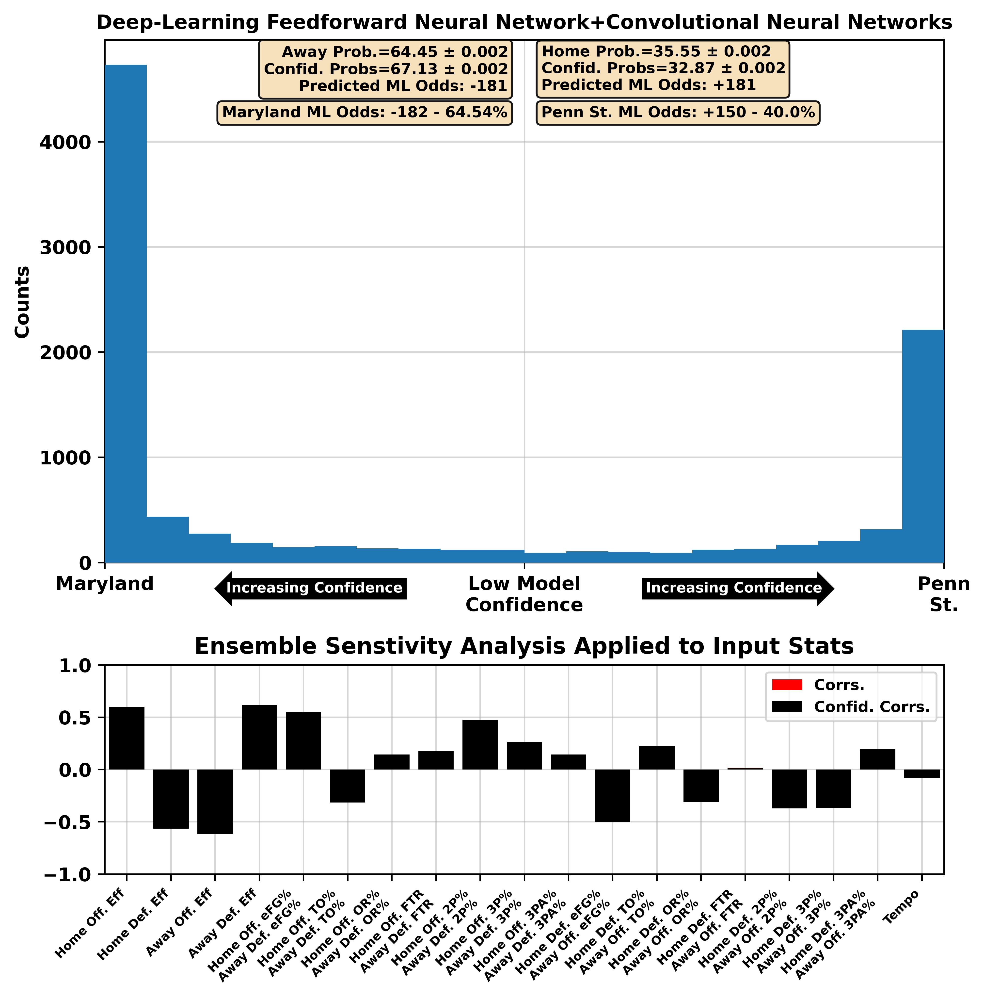

| BART Torvik Prediction | 11:00 AM 5 Tennessee at 22 Texas A&M ESPN | Tennessee -0.1, 63-62 (50%) |


| BART Torvik Prediction | 05:00 PM 18 Kentucky at 6 Alabama ESPN | Alabama -8.8, 98-89 (75%) |


| BART Torvik Prediction | 07:00 PM 3 Duke vs 15 Illinois FOX | Duke -7.1, 81-74 (74%) |


| BART Torvik Prediction | 02:30 PM 27 Mississippi at 41 Vanderbilt SEC Network | Vanderbilt -1.0, 77-76 (54%) |


| BART Torvik Prediction | 03:00 PM 26 Clemson at 37 SMU ACC Network | SMU -1.0, 74-73 (54%) |


| BART Torvik Prediction | 07:00 PM 9 Missouri at 45 Arkansas ESPN | Missouri -3.5, 77-73 (63%) |


| BART Torvik Prediction | 09:00 PM 20 BYU at 7 Arizona ESPN | Arizona -6.6, 81-74 (73%) |


| BART Torvik Prediction | 12:00 PM 28 Mississippi St. at 61 Oklahoma SEC Network | Mississippi St. -1.7, 76-74 (57%) |


| BART Torvik Prediction | 07:00 PM 21 Saint Mary's at 13 Gonzaga ESPN2 | Gonzaga -4.8, 73-68 (68%) |
 



| BART Torvik Prediction | 01:00 PM 11 Iowa St. at 1 Houston ESPN | Houston -10.3, 71-60 (86%) |


| BART Torvik Prediction | 01:00 PM 75 Penn St. at 79 Minnesota BTN | Minnesota -2.9, 72-69 (62%) |


| BART Torvik Prediction | 03:00 PM 29 Baylor at 102 Colorado ESPN+ | Baylor -5.5, 73-68 (71%) |


| BART Torvik Prediction | 12:00 PM 32 West Virginia at 8 Texas Tech ESPN+ | Texas Tech -8.6, 71-62 (82%) |
 



| BART Torvik Prediction | 03:00 PM 97 Oklahoma St. at 25 Kansas CBS | Kansas -14.7, 81-66 (91%) |